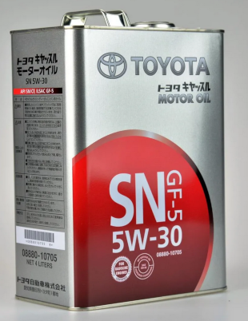
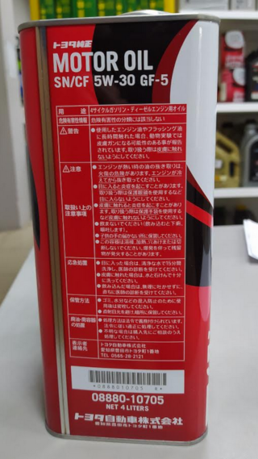
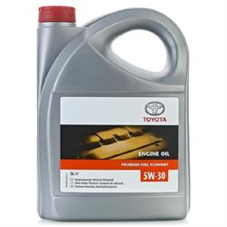
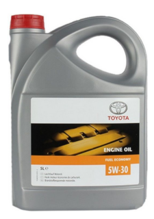

Оригинальный фильтр TOYOTA
Toyota 90915-10003 - это правильный парт-номер
Параметры фильтра и размеры:
Еще варианты фильтров:
Оригинально масло, синтетика 4 л.
Toyota 08880-10705 - это правильный парт-номер
Обозначение: Масло TOYOTA 5W-30 SN GF-5
Масло моторное синтетическое "Motor Oil 5W-30", 4л в металлической банке

SN - значит синтетика. Не путать с 5W-30 SN/CF, которое по неизвестным причинам выпускается TOYOTA под двумя парт-номерами 08880-10705 и 08880-83944. Нет ничего странного? Да, парт-номер этого масла совпадает с чистым 5W-30 SN. Вот, пожалуйста:

По сути, это другое масло с добавками для дизельных моторов (о чем говорит маркировка CF). Продавцы могут навязывать это масло для бензиновых моторов, говоря что оно совместимо и указывая на одинаковый парт-номер. Если кто-то хочет попробовать залить в бензиновый мотор такое масло - это его право, но лучше так не делать.
Или можно брать оригинальное масло-синтетику "Toyota Engine Oil 5w30 Premium Fuel Economy" 5 литров, парт-номер 08880-83389. Иногда в прайсах вместо 5L пишут SL, и надо смотреть внимательно, что имеют в виду.

Масло Toyota 08880-83389 является на 100% синтетическим маслом без минеральных примесей, обогащенное комплексом присадок. Никаких минеральных компонент в нем нет. Благодаря такому сочетанию масло показывает более увеличенный срок службы и требует замены через 8–12 тыс. накрученных километров (вместо обычных 5-7 тыс.). На упаковке на насыщенной оранжевой линии написано "Premium Fuel Economy".
Бывает, что вместо 08880-83389 навязывают масло 08880-80845 - "Toyota Motor Oil Fuel Economy 5W-30 5л. синтетическое" (в названии нет Premium), которое внешне по упаковке выглядит практически как 08880-83389, только линия боле желтая и на ней написано "Fuel Economy":

Моторное синтетическое масло Fuel Economy с артикулом 08880-80845 имеет в своем составе минеральные компоненты. Кроме того, в нем содержится большой комплекс различных присадок, но, при взаимодействии с минеральной составляющей, масло начинает терять свои свойства уже через 5–7 тыс. км.